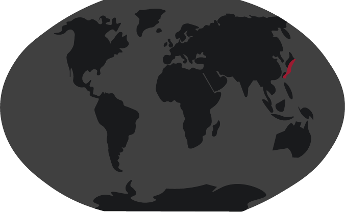

- Hi! I’m a Japanese Spider Crab and my name can also be Macrocheira kaempferi.
- I live around 600 metres deep.
- I like eating plants, algae and small animals, like mollusks.
- I’m especially afraid of fishermen and octopuses, because I’m extremely vulnerable, when I’m moulting my shell.

appearance & biology
With a lifespan of 100 years, the Japanese spider crab has a lot of time to grow.
An average fully grown crab weighs around 19 kilograms and can be 3 meters from end to end if it were to stretch its legs out fully.
The crab’s limbs are very fragile throughout its whole life.
It’s common to find spider crabs with even three or four limbs missing, dragging themselves along the seafloor.
Connection with humans
The population of the Japanese spider crab is slowly decreasing, but it hasn’t reached the level of endangerment yet.
Japanese folklore portrays these creatures as giant sea monsters that would drag sailors off their ships to never return.